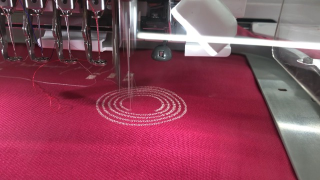

予約の仕方は事務員さんに聞けば教えてくれます。予約する時点でどんなものを作るか、具体的な案がある、 もしくはイラストレーターでデータを作った状態でどんな布にどんな柄を何色使って縫うかを決めてから行きましょう。
教学事務室の発券機で買えます。買ったものをウルトラファクトリーに持っていくとスタンプカード式の金券 と交換してもらえます。刺繍ミシンは1回の予約で支払う金額は200円です。予約した時間内であればどれだけ糸 やミシンを使っても200円です。
基本的にミシンの針が折れなさそうなものなら何でもしていいみたいです。
接着芯がないとうまく刺繍できないです。(例外あり)だいたい500円前後で売られています。
データがないと何もできないので絶対に用意しましょう。
データを入れてウルトラのパソコンや刺しゅうミシンにデータを移すときに必要です。

作りたい大きさの約3倍ほどの大きさで作るときれいにできる。
最終的に画像解析をするときに画像をピクセル化するような状態になるので大きく画像を作っておけば、 読み込まれやすく細かい部分まで再現されやすいので、画像は大きく作ることをおすすめする。
仮にハートマークを自分のやりたい刺繍の柄だったとした時、画像を取り込みペンツールを使って 画像の枠のパスを作る。この時枠線なしの塗りつぶしでデータを作っていく

色は刺繍の時に入れたい色ではなく隣り合う色と差がある色で塗るとデータが読み込まれやすいです。 似たような色合いのもを隣り合わせるとうまくデータが読み込まれないので差をつけることをお勧めします。 カラーピッカーの6桁の英数字は同じ色にしたいところは全部正確に合わせましょう。パソコンは少しでも違うと 見た目が似たような色でも、違う色だと認識されるので注意しましょう。
これで完成
ファイル→書き出し→書き出し形式...→ファイルの種類[JPEG(.*JPG)] →カラーモード[RGB]→解像度[高解像度300]

ここからはウルトラの刺繍ミシン専用のノートパソコンを使ってデータを編集します。
※写真がありません
ウルトラの事務室から刺繍ミシン専用のノートパソコンを使います。刺繍プロというアプリで編集するのですが 専用のUSBを刺さないとできません。
パソコンを立ち上げ自分のとウルトラのUSBを刺したら、デスクトップに作った自分のデータを置き花のマークの刺繍プロのアプリを開きます。
画像→開く→ファイル→デスクトップから自分の画像を選択→オートパンチ(リンゴマーク)→次へを2回押す(何も気にしないで押して)→ 下の2本のバーで調節して、いらない色をバツにする→完了を押す→表示→図形→縫い方を選ぶ(縫い方の上は輪郭、下が中身)→左の色分けを選択する と右が赤くなる→縫い方を変える→左の色分けの四角の＋を押すと細かく設定できる→縫う順番を決める上から1,2,3…と決める→ベタ→枠→文字(左から順番にとか綺麗に並べる) 糸密度は5.5ぐらいがいいと思われる→ホーム→ツール→物差しで図る(左下に出る)→ホーム画面→データ出力→E→でUSBに入れる
アイロンで接着芯は縫いたい表面の裏側につける(ウルトラにアイロンはある)。 接着芯は縫う部分より大きく(刺繍枠より大きくしたほうがいい)。 刺繍枠にしっかり張って止める。縫いたい面はそこにして布を張る。 ピンって張ってるほうが刺繍したあと綺麗。ネジを止める平たい栓抜きみたいなコインぐらいの大きさのやつでネジをしっかりと止める
刺繍枠の幅と刺繍ミシンの幅を合わせる。刺繍ミシンの右奥の電源を入れる。USBを機械にさす刺す部分に マークが書いてあるのでタッチパネルからそれと同じマークを押す。自分の刺繍したいデータをタッチし、 角度や大きさを合わせる、糸をを選び左下のロックをタッチして(↑)のボタンが赤から緑になったら押してスタートをする。
刺繍される向きは奥(ミシン側)から手前(自分側)に上から下に柄が刺繍される。
あとは縫う速さは布によって合わせないと針が折れてしまうので最高でも１mm までの布だとウルトラの人に言われました。
ざっくりいえばこんな感じです。写真がなくて申し訳な。
ここからは私がどんなものならできるのか実験してみた。

少し厚めの布
大きい布...一番遅いスピード、接着芯あり、放射縫い、畳縫い
小さい布...一番遅いスピード。接着芯なし、畳縫い

厚さ約0.5mmのほどほどに伸縮性のあるビニール
一番遅いスピード,接着芯なし、畳縫い
成功したが刺繍枠からはずしたところ縮んでしまい 正円に縫うはずだが縮んでしまった影響で楕円形になってしまった。 猫の刺繍は丸の刺繍に比べて周りのビニールはよれていない。ほかの素材と比べてもあまりよれていない。
織られたビニール製と思われる布(材質は調べている途中)厚さはなく薄い伸縮性のないパキパキしているような布
一番遅いスピード,接着芯なし、畳縫い
丸はやはりよれて正円が楕円になっている。猫は比較的よれていない。
表
裏
レザーの布、表合皮、裏布の伸縮性のある布を縫ってみた。
一番遅いスピード、接着芯なし、畳縫い
今回猫はやっていないが丸の縫う向きを変えてみた。赤は上下に白は斜めに、布の繊維方向は赤と同じ向き。伸縮性があるためよれやすくなっている、繊維方向が違えばきれいに縫えると考えて白を斜めにしたのだがしっぱいした。
伸縮性のある布や薄い布はよれやすく、面積の広い刺繍のデザインは布がよりやすいことが分かった。
写真に写っている黒い紙袋に入っています(黒い紙袋は刺繍ミシンの近くにあります)。 鉄の棒と本体が分かれて入っているので使うときは写真のように組み立ててください。 機械に番号が書いてあるのでその順番どうりに糸を通してください。１番は奥から手前に、 ２番は近くに書いてある絵のように３は手前から奥に、４は下糸を巻き付けるボビンに軽く糸を巻き、 ちゃんと糸がまかれる向きにボビンを５番にセットする。